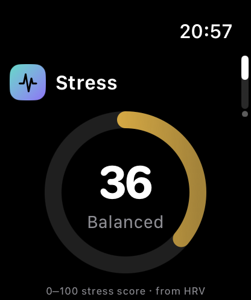
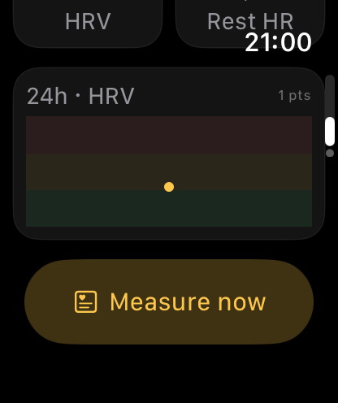
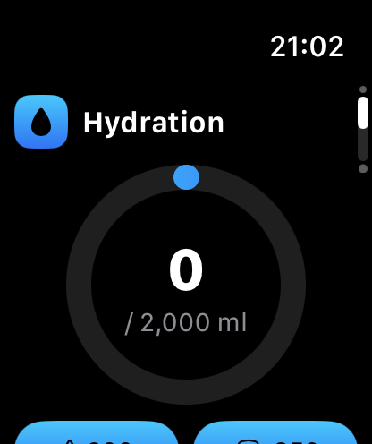
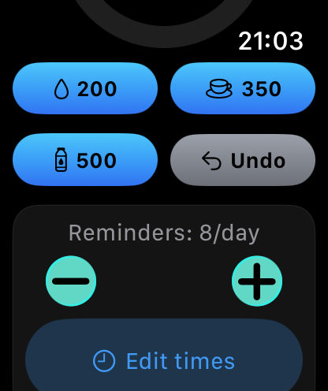
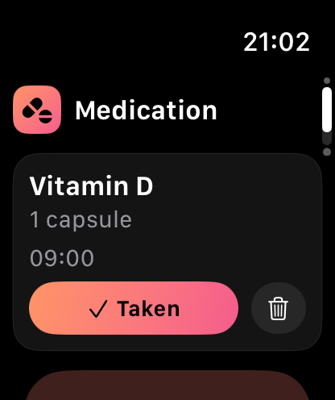
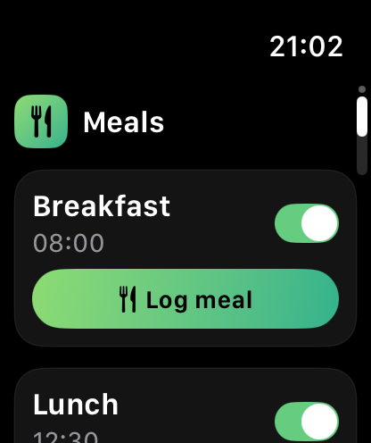

独立 Apple Watch 健康陪伴应用 —— 用 HRV 量化压力，配合喝水 / 用药 / 用餐提醒，帮用户建立健康节律。本 PRD 供后续产品 / UI Agent 接力设计。
一句话定位：抬腕即知的「压力 + 健康节律」陪伴者。把 Welltory/Whoop 的 HRV 压力洞察，和 WaterMinder/Medisafe 的提醒打卡，浓缩进一块表里，零文字、图形化、年轻活力。
都市上班族 / 学生，有 Apple Watch，关注健康但没耐心记录。想"被动地"了解自己的压力状态，并需要外力提醒喝水吃药。
竖向翻页 TabView（表冠/上下滑切换），4 个并列主模块，无多级跳转。弹窗用于测量、添加、编辑。
弹出层(.sheet)：压力测量 MeasureSheet、喝水时间编辑 HydrationScheduleView / TimePicker、添加药品 AddMedicationView。
外部入口：Smart Stack 卡片(从表盘上滑) + 表盘复杂功能(圆形/行内)。
以下为当前 v1.0 实际渲染效果，供 UI 改版作为基线。






截图源文件：docs/screens/*.png（模拟器无真实传感器，压力为模拟值、12h 图基本空属正常）
P0=核心已实现，P1=已实现可优化，P2=规划中。
| 功能 | 优先级 | 说明 / 验收 |
|---|---|---|
| 压力分数环 | P0 | 0–100 分 + 状态(Calm/Balanced/Stressed) + 状态色环。来源：HRV(SDNN)，必要时叠加静息心率。 |
| HRV / 静息心率信号卡 | P0 | 显示原始 HRV(ms)与 Rest HR(bpm)。 |
| 12h HRV 趋势图 | P1 | Swift Charts 折线 + 冷静/平衡/紧张三色带。纯 HRV 来源，稀疏时显示"暂无"。 |
| Measure now 活体测量 | P0 | 60s 正念运动会话→取逐拍→算真 SDNN→算完删 workout。弹窗显示实时 bpm+倒计时+结果。 |
| 被动自动刷新 | P1 | HKObserverQuery：新 HRV 样本到达自动重算+刷新卡片。 |
| 高压力提醒 | P0 | 分数≥70 即时本地通知建议呼吸。 |
| 压力 周/月 报告 | P2 | 待设计：长期趋势、昼夜节律、与睡眠关联。 |
| 功能 | 优先级 | 说明 / 验收 |
|---|---|---|
| 进度环 + 当日量/目标 | P0 | consumed/goal ml，达标显示🎉，每日 0 点自动清零。 |
| 快捷加水 | P0 | 200/350/500 ml 一键 + Undo(已修复不会变负)。 |
| 每日提醒次数 | P0 | Stepper 0–16 次/天。 |
| 每条提醒自定义时间 | P1 | Edit times → 逐条时间选择器 → 真排程到手表通知。含"5s 测试通知"。 |
| 自定义目标 / 杯量 | P2 | 待设计：目标值与快捷量可调。 |
| 功能 | 优先级 | 说明 / 验收 |
|---|---|---|
| 药品列表 + 剂量 + 时间 | P0 | 名称/剂量/每日提醒时间；今日已服显示✓徽章。 |
| 一键 Taken 打卡 / 删除 / 添加 | P0 | AddMedicationView 表单创建并排程通知。 |
| 三餐提醒开关 + 打卡 | P0 | 早/午/晚默认时间，可开关，Log meal 打卡。 |
| 用药依从率统计 / 多剂量 / 餐时自定义 | P2 | 待设计。 |
从表盘上滑的卡片堆叠。青→蓝→紫渐变玻璃底，左压力渐变环、右喝水液面球，大数字、零文字。三种尺寸：
| 尺寸 | 内容 | 用途 |
|---|---|---|
| accessoryRectangular | 压力环 + 喝水液面球(并排，撑满) | Smart Stack 主卡(全彩) |
| accessoryCircular | 压力分环 | 表盘圆形复杂功能(随表盘着色) |
| accessoryInline | 🫀42 💧60% 单行 | 表盘顶部行内 |
数据：主 App 经 App Group 写快照 + WidgetCenter.reload 即时刷新；兜底每 30 分钟自刷。
| 模型 | 字段 |
|---|---|
| StressReading | date, score(0-100), hrvSDNN?, restingHR? → 派生 level |
| StressPoint | date, score, source(hrvSample/measurement) — 12h 图用 |
| HydrationState | goalML, consumedML, lastResetDay, reminderTimes[] |
| Medication | name, dose, times[], takenDates[] |
| MealReminder | name, time, enabled, loggedDates[] |
| WellnessSnapshot | 压力分/状态/HRV/喝水/下次提醒 — 给 Widget |
| 数据 | 存哪 | 机制 |
|---|---|---|
| 业务状态(喝水/药/餐/压力历史) | UserDefaults | 整体 JSON，key mywatch.state.v1，压力历史上限48条 |
| Widget 快照 | App Group 共享 | group.com.lichaochen.mywatch |
| 心率/HRV 原始 | HealthKit 系统库 | 系统长期保存，App 申请读取 |
扩展建议：长期压力趋势宜升级 SwiftData；跨设备同步用 CloudKit。详见 ARCHITECTURE.html。
WKWatchOnly。无 iOS 数据、无 WatchConnectivity。reinstall.sh 重装；HealthKit 后台投递 entitlement 不可用，后台唤醒不保证。MyWatch Watch App/ · 构建：xcodegen generate + reinstall.sh。本 PRD 与截图均可作为后续设计的可编辑基线。MyWatch PRD v1.0 · 由 Claude 整理 · 双击在浏览器查看